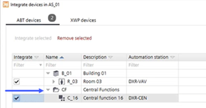
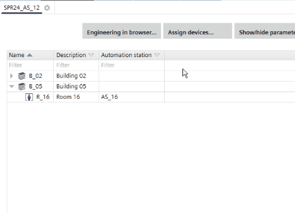

分配设备
对于已分配设备的每个目标系列，都会显示一个选项卡，其中包含已分配设备的列表。并非所有设备都支持使用 ABT 站点分配设备。

无法将 XWP/Apogee 和第 3 方设备分配给具有 Web 界面的设备。
- ABT devices
for assigned room automation devices - XWP devices
for assigned Desigo primary devices (PXC) - Apogee devices
for devices assigned over Apogee PX - 3rd party devices
for assigned 3rd party devices
如果项目中使用了中心功能，则必须存在相应的层次结构。如果没有层次结构，设备在系统中不可见Integrate devices对话。

Engineering > Device assignment允许您一次最多打开 5 个选项卡（实例）。

Assign devices
- You have added an operating and monitoring device, for example PXG3.W100, or a device with web interface to the building structure.
- You have added at least one automation station to the building structure.
- A central function hierarchy is created in the Central functions task.
Defining a central functions hierarchy
- Go to Building > Building structure.
- Right-click an operating and monitoring device, or a device with web interface, and select Go to engineering.
- Click Assign devices.
- Select the rooms you want to assign.
- Click Integrate selected.
- Click OK.
- The selected automation stations are assigned.
集成对话框中列出了使用 XWP / 客户项目设计的所有设备。
即使原始分配数据 (BBI) 在项目上下文中不可用，也会列出已分配的 XWP 设备。
BBI 是 Desigo XWP 环境中主控制器的西门子内部 BACnet 描述接口 (BACnet Beschreibungs Interface)。仅支持4.0及以上版本的主设备，旧设备不列出。
Engineering > Device assignment允许您一次最多打开 5 个选项卡（实例）。